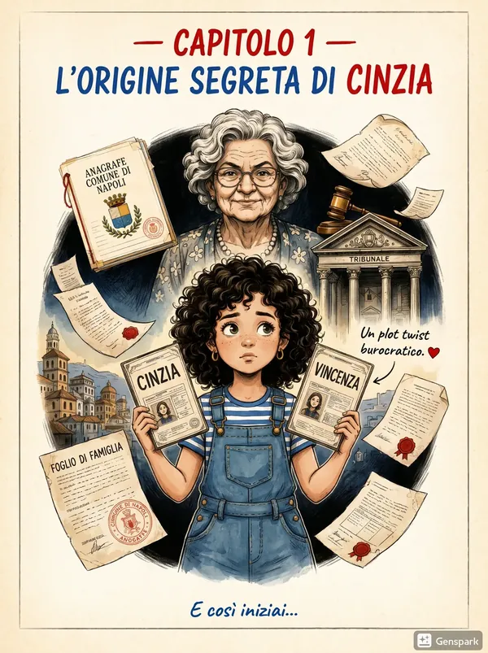
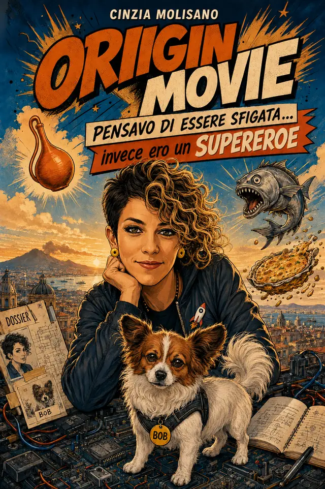
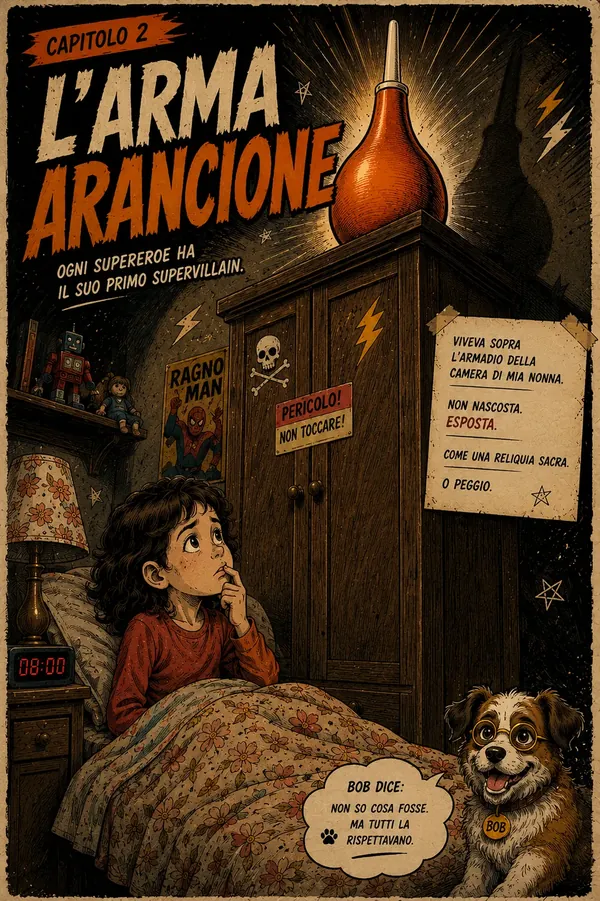
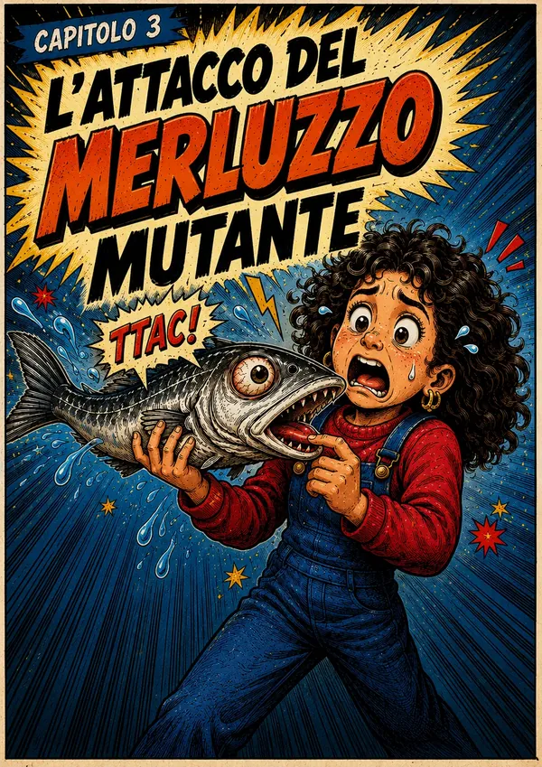
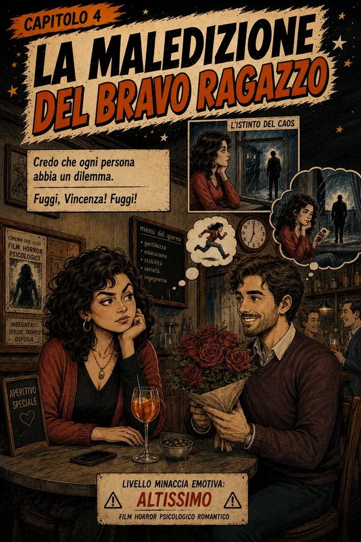
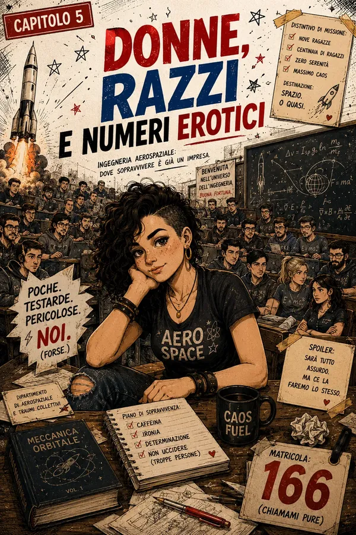
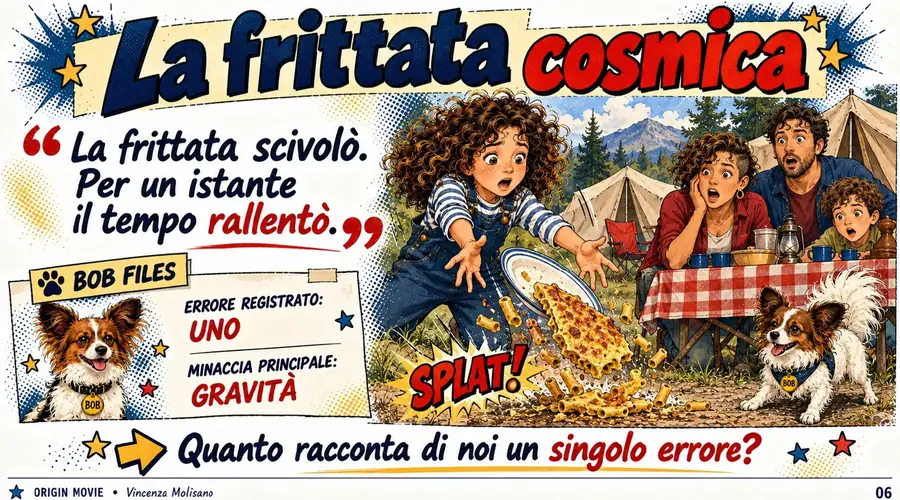

FILE #001Origin story
L'origine segreta di Cinzia
Alcuni supereroi scoprono la propria identità dopo un morso radioattivo. Altri la scoprono all'anagrafe.
Pensavo di essere sfigata… invece ero un supereroe
Ogni supereroina ha una storia delle origini. La mia comincia con due nomi, un merluzzo sospetto e una frittata di pasta che la mia famiglia non ha mai dimenticato.

Origin Movie è un racconto illustrato che intreccia autobiografia, ironia e fantasia. Tra piccoli disastri quotidiani, passioni e sogni che cambiano strada, racconto il percorso tra ciò che volevo essere e ciò che sono diventata.
Ad accompagnarmi c'è Bob, con i suoi immancabili fascicoli investigativi: ogni ricordo diventa un caso, ogni dettaglio una prova, ogni figuraccia un timbro rosso.
Per chi si è sentito almeno una volta fuori posto e ha voglia di guardare le proprie avventure da un'altra prospettiva.
Ufficialmente Vincenza, praticamente Cinzia. La mia identità è cominciata così: con un nome scelto da altri e una doppia vita tra casa e registro di classe.
Per anni ho pensato che i miei piccoli disastri dicessero chi ero. Poi ho capito che forse i supereroi sono quelli che sopravvivono ai piccoli disastri quotidiani senza perdere completamente la capacità di ridere.
Ho scritto Origin Movie per rileggere quei momenti con un altro sguardo, e perché qualcuno, leggendoli, potesse pensare: «Allora non è successo solo a me.»

Ogni capitolo è anche un caso investigativo di Bob. Qui ne trovi un'immagine e un piccolo teaser: il resto resta nelle pagine di Origin Movie.

Alcuni supereroi scoprono la propria identità dopo un morso radioattivo. Altri la scoprono all'anagrafe.

Ogni famiglia ha un oggetto mitologico. Nella mia viveva sopra un armadio, era arancione e bastava nominarlo.

Negli anni '80 si giocava con qualunque cosa. Anche con un merluzzo apparentemente morto. Apparentemente.

Gentile, educato, stabile. Sulla carta perfetto. Ed è proprio lì che il mio sistema nervoso percepisce il pericolo.

Ingegneria aerospaziale, nove ragazze in un esercito di uomini e una matricola da hotline anni '90.

Campeggio, gravità e una frittata di pasta. È caduta una volta sola; nella memoria di famiglia cade ancora.
Classificati. Bob si rifiuta di commentare. Per aprirli serve il libro.
Sblocca su Amazon →Propongo incontri per scuole, biblioteche e librerie: un'occasione per parlare di identità, etichette, appartenenza, curiosità e prime delusioni, partendo dalle immagini e dagli episodi del libro.
Non è una lezione: è una conversazione. Nessuna risposta giusta, nessuno obbligato a raccontarsi.
Leggo e mostro alcune tavole: il nome, la frittata, le nove ragazze a ingegneria, i due centimetri tra me e un sogno.
Ogni episodio apre una domanda per la classe: «Un errore può definire una persona per sempre?» «Un no racconta tutto di noi?»
Una scheda per trasformare un piccolo episodio, vero o inventato, in una storia con parole o disegni. Condividere è sempre una scelta.
Alcune delle tavole che uso. La presentazione completa la invio ai docenti su richiesta.
La scheda A4 usata durante gli incontri, da stampare o da guardare in anteprima.
Durata, età consigliate, temi, come si svolge e cosa serve in aula, tutto in una pagina da condividere con i colleghi o allegare alla proposta per il collegio docenti.
PDF · 2 pagine · A4Compila il modulo per propormi un incontro o chiedere un'anteprima del materiale. Ti rispondo personalmente, di solito entro pochi giorni.
Preferisci l'email? Scrivimi a cinziamweb@gmail.com